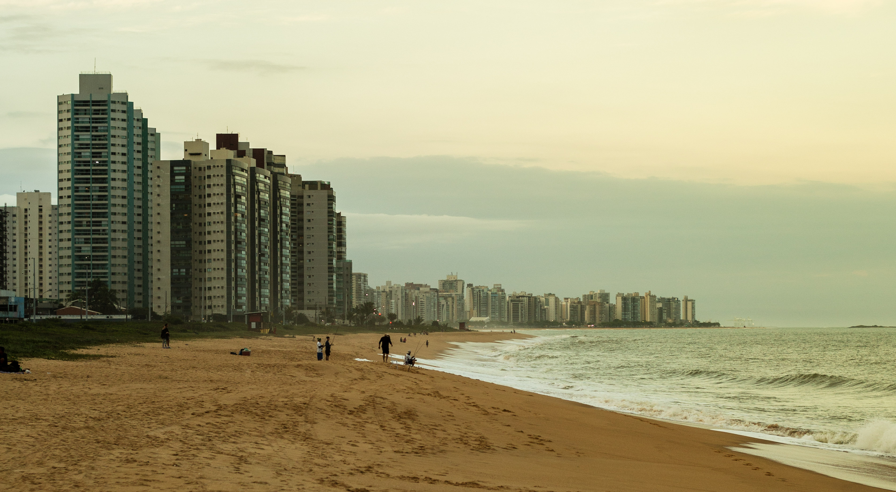
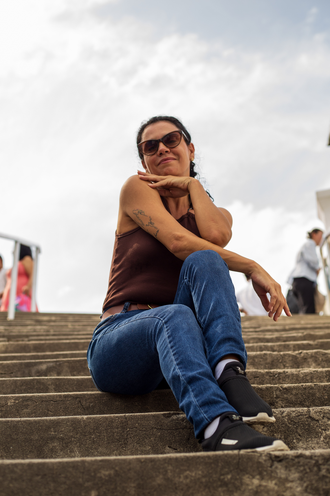
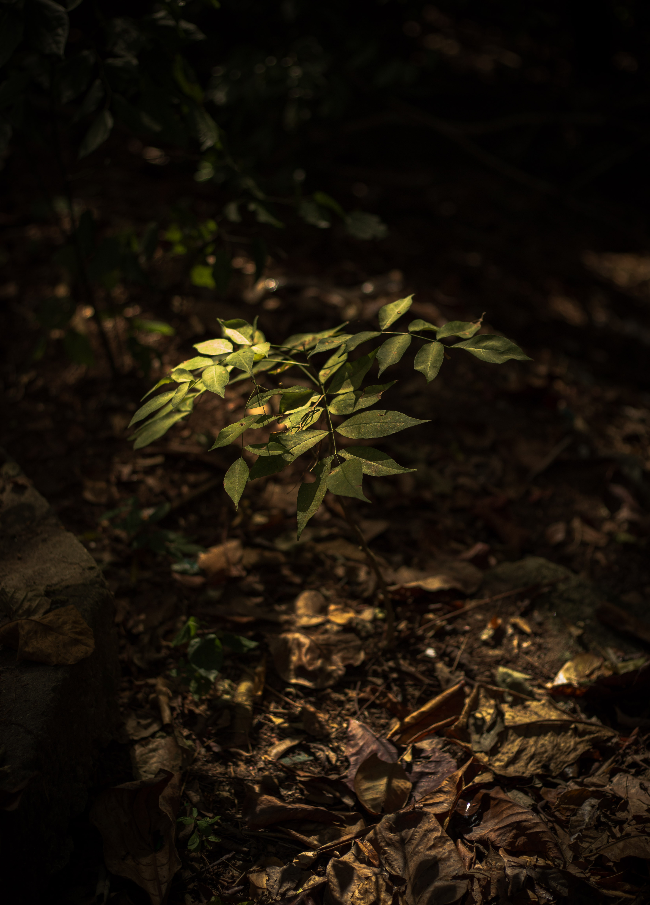
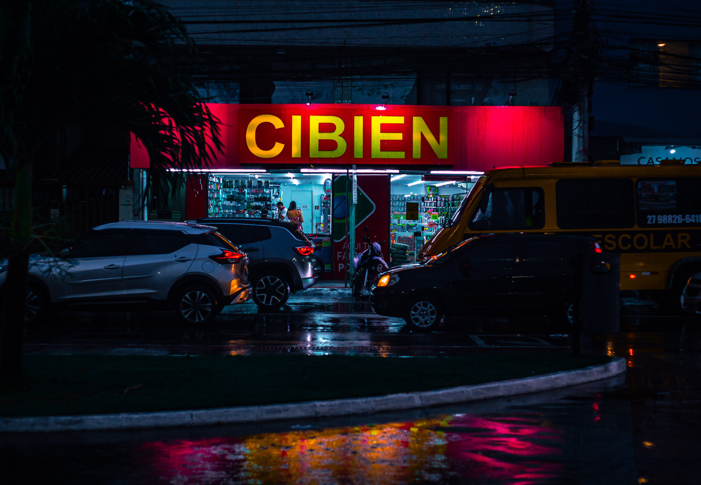

Fotografia · Vila Velha, ES
Registro pessoas, eventos e a atmosfera de Vila Velha com um olhar formado na rua, hoje aplicado a retratos, ensaios e coberturas com a mesma atenção à luz e ao momento certo.




Sou fotógrafo baseado em Vila Velha, no Espírito Santo. Construí minha base na fotografia de rua, onde aprendi a ler luz, esperar o instante certo e trabalhar rápido sem perder a composição.
Agora aplico essa mesma atenção a retratos, ensaios e coberturas de eventos, sempre buscando imagens que pareçam vividas, não posadas demais, com a atmosfera real do momento.
Atendo Vila Velha, com disponibilidade para deslocamento combinado previamente.